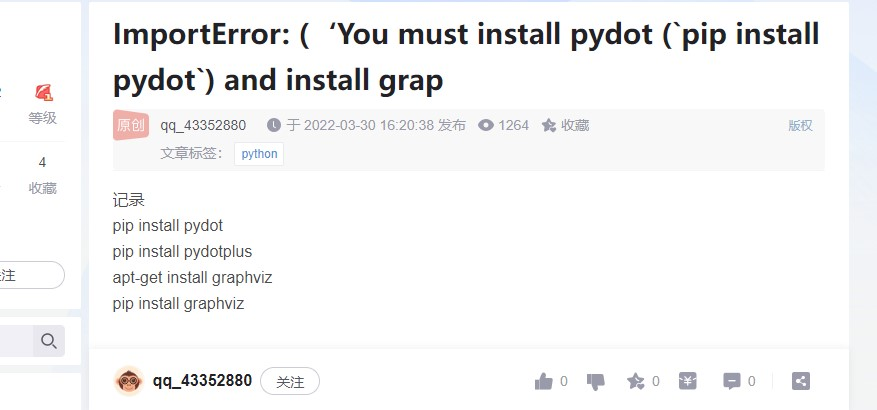

Anaconda 使用指令
顯示/讀取區
cv2.imread (BGR)讀取後使用 plt 輸出 GRAY 一通道圖像
建立 list陣列
資料型態轉換dtype
使用的話要注意使用前的陣列是 list 或是 array，如不是 array 須先轉為 array
list 轉 array 方式 np.array 或 np.asarray
直方圖均衡化 Histogram Equalization
Tensorflow 區
np.array
np.argmax 找陣列內最大值 回傳出最大值的位置，axis=1 找列最高值 ， axis=0 找行最高值
Pandas 區
os.path.join
Model 繪製模型架構圖
tf.keras.utils.plot_model(model, to_file='model.png')
下載 graphviz 選擇加入到環境系統以及 pip install pydot
